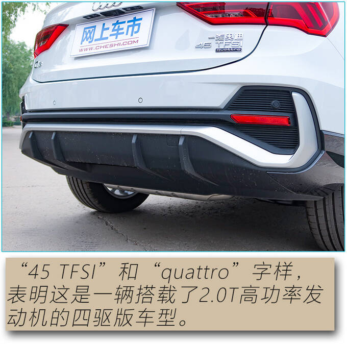
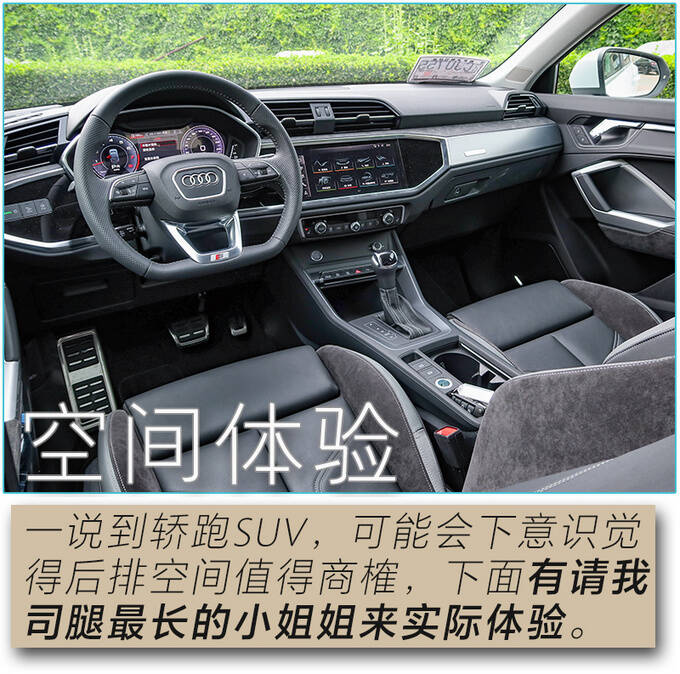

奥迪Q3轿跑 A级豪华SUV颜值之选
转载 网上车市（贾玥） 2020-5-24 17:08今天试驾的这款车型，对于追求外观的年轻人来说有着很强的“杀伤力”，特别是对设计美学格外敏感的小姐姐们。奥迪Q3轿跑代表了奥迪在设计美学进化历程中的新高度，独具美感的掀背造型与车身的肌肉感完美平衡，融合了运动、进取、现代、激情的设计语言，使奥迪Q3轿跑独具个性魅力，奥迪Q3轿跑的长宽高分别为4,518mm、1,843mm和1,573mm，较宽的车身尺寸更好地体现了车辆的力量感，水切造型线完美将整车上下比例划分为1:2。
除此之外，奥迪Q3轿跑共提供了11种外部车身颜色，无论车身线条的流畅、车身比例的完美还是车身颜色的丰富，奥迪Q3轿跑都让我司当家主持人对它一见钟情。下面就请随我详细了解，奥迪Q3轿跑除了它独具个性的外观设计，还有哪些地方让小姐姐想把这辆车收入囊中。



既然有着“轿跑”之名，难免会让人对它的动力性能有所期待。今天我驾驶的奥迪Q3轿跑搭载高功率版EA888-DKX 2.0T发动机，最大功率162kW和最大扭矩350N·m，驱动这个尺寸的SUV车型没有任何压力。起步阶段就能感觉到有股子冲劲儿，按照当下比较流行的话术是“踩油一时爽，一直踩油一直爽”，充沛的动力输出可以很轻松地在高速上以最高限速飞驰，而且SUV车型较长的悬架行程，也让车辆在加速过程中呈现车头向上轻微扬起的姿态，增加了驾驶员的速度感受。
除了迎合SUV属性的“越野”模式之外，剩下的四种模式，我都进行了充分体验。如果不知道如何选择，“自动”模式能够满足各种路况下的驾驶需求，通过判断驾驶者的实际操作情况，车载电脑会自动对转向手感和变速箱模式进行调整。早晚通勤高峰，推荐使用“舒适”模式，此时方向盘转向手感较为轻盈，动力输出灵敏度也被降低，缓慢跟随前车，起步停车更好控制，不用频繁在加速和制动踏板之间切换。至于“个性化”模式，则给了驾驶员更多的自主选择权，比如可以把运动模式下的充沛动力输出和轻盈的转向手感相结合，满足实际驾驶需要。
在“动态”模式下，变速箱自动切换为S挡，相比D挡降低两个挡位，转速保持在2000rpm以上，动力输出敏捷直接，我感觉这个时候才能发挥出EA888发动机的真实水平。在动态模式下，转向手感也有明显变化，转向阻尼力度增加，维持精准指向的同时，给人感觉更为沉稳。
除了通过中控台上的按键切换到“动态”模式之外，你也可以直接把换挡杆向下拉进S挡。超车时，非常推荐使用，特别是在早晚高峰时候，车流中并线穿梭，等转向灯闪过3秒之后快速切入旁边的车道非常关键，动力跟不上就会影响后面车辆通行。D挡模式下因为变速箱会照顾到经济性，积极升挡，发动机转速保持在较低的水平，在并线时，会有轻微力不从心的感觉，提前切换到S挡就完全没问题。
除了S挡之外，奥迪Q3轿跑还提供了另外一种直接获得动力输出的办法，通过方向盘后方的换挡拨片，进入手动换挡模式。在中高速行驶中，如果对D挡下的加速度心存疑虑，手动降低一到两个挡位，并线超车更有信心。
奥迪Q3轿跑在操控感受上接近奥迪紧凑型轿车，可以提供较为清晰的路面状况传导，也有着不错的弯道横向支撑性。在加速、制动过程中，纵向俯仰动作让人感受到它是一款SUV车型，你可以精确控制车辆的速度，富有力道的刹车踏板也带来丰富的人车互动体验，确实有性能轿跑“内味儿”了。
对于这个级别的轿跑SUV来说，安静并不是考量它的重点，不过奥迪Q3轿跑在车内静谧性体验方面也没有让我失望，可以隔绝大部分外部噪音。车内能够听到的主要是车辆在高转速下发动机的咆哮，特别是切换到S挡的时候，可以全程感受到发动机的声浪和振动。


奥迪Q3轿跑后排座椅支持4:2:4比例独立翻折，座椅靠背角度可调节倾斜角度达到25度，坐垫前后移动的范围为130mm，即使经常有身材较为魁梧的男性友人乘坐后排，也能找到比较舒适的坐姿。
除了一眼看到的空间以外，后备厢底板采用两种高度的隔板设计，可以营造一层隐秘的空间，藏点儿不常用的随车备用物品，再合适不过了。轿跑SUV后备厢开口大，不过小姐姐也不必担心关门时姿势尴尬，奥迪Q3轿跑全系标配电动尾门，而且高度可调，对女车主更加友好。
一天的体验之后，小姐姐把自己的Q5扔在了路边，开着奥迪Q3轿跑回家了……果然女人最懂女人，奥迪Q3轿跑的造型出自奥迪品牌亚裔女性外观设计师Seulah Park之手。话说起来上一次奥迪以车身造型颠覆人们对于德系车“线条呆板”的认知，还要追溯到1968年的Audi 100Coupe。52年之后，奥迪Q3轿跑向人们展示了奥迪品牌对于设计美学的最新诠释。
具体到我们今天的体验，在行驶质感方面，奥迪Q3轿跑依旧保持了奥迪品牌一贯的高水准，这一点也在我的意料之中；而人性化的车内空间设置超出了我的预期，特别是后排头部空间，并没有因为造型而牺牲乘坐舒适性。奥迪Q3轿跑即将于5月29日正式上市，预计将推出搭载1.4T和2.0T两款发动机的四款车型，对这款全新轿跑SUV感兴趣的朋友，请继续关注网上车市发布的实时报道。